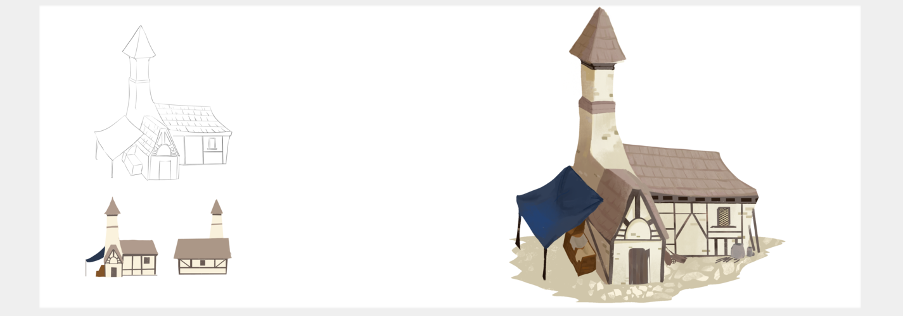
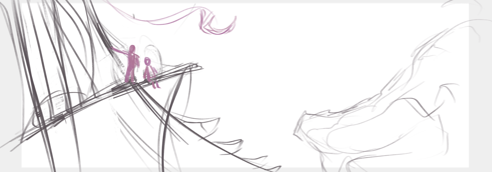
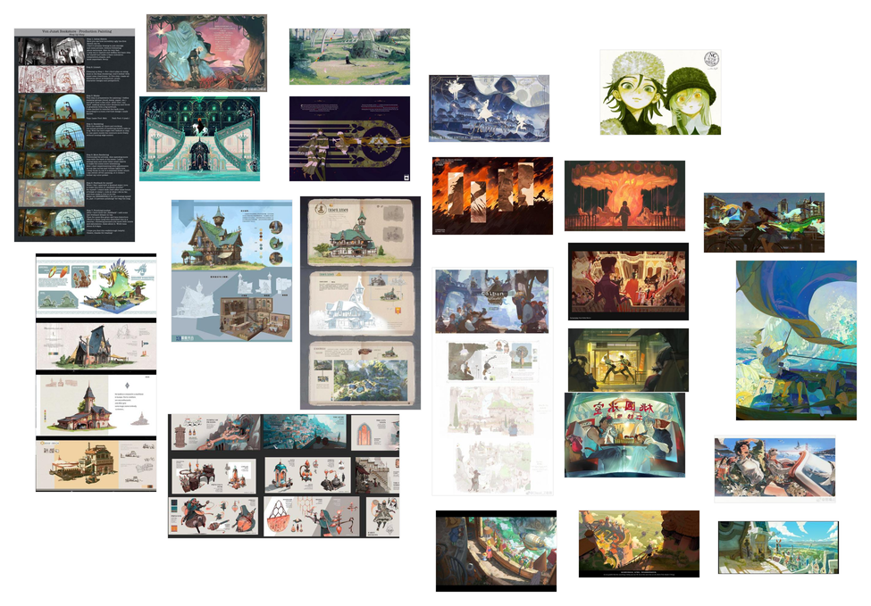
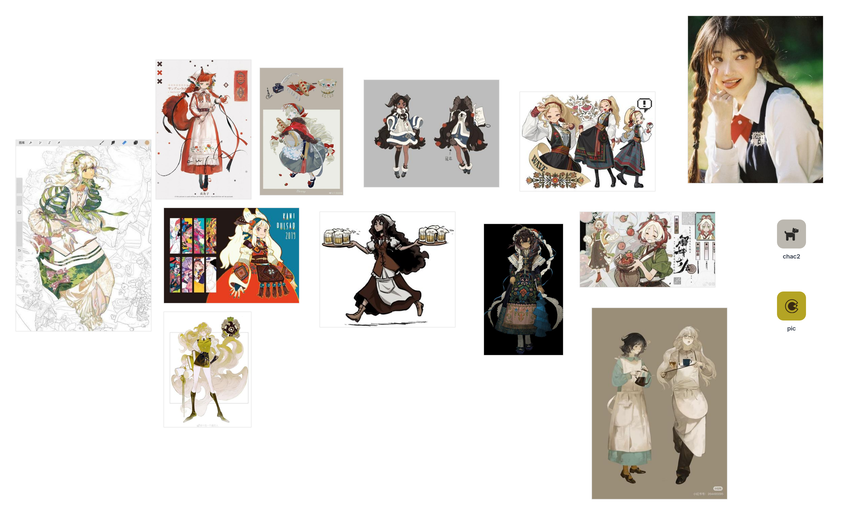

3. Drafts




Final Year Illustration Project • Chiu Hoi Ying • 2026
A visual journey from idea to finished illustrations
A digital illustration series, exploring NPC autonomy in a collapsing MMORPG world during final server shutdown hours.


Color palette, textures, and visual references that shaped the atmosphere of the project.


Earth Online imagines an MMORPG teetering on server shutdown, where NPCs—long bound to repetitive scripted loops as shopkeepers, quest-givers, and background wanderers—suddenly awaken in the final 24 hours to explore, complete unfinished quests, and savor a digital world they were never designed to truly inhabit. Victorian architecture defines their settings—cobblestone alleys, gothic spires, and arched libraries—infused with steampunk elements like exposed gears, brass gauges, and flickering lanterns that evoke a bygone mechanical nostalgia. At its heart, this series delivers a comforting reminder: enjoy life, live in the moment. Soft, warm lighting bathes each scene in hues of honeyed gold, muted lavender pastels, and gentle rose glows, creating an overall style that feels like a heartfelt embrace rather than digital doom. Even as server errors creep in—faint scan lines, dissolving textures—the palette prioritizes solace over chaos, turning apocalypse into intimate reflection. Through a series of digital illustrations, crafted with Procreate's thick coating style for tactile depth, I layer these stories: task UIs softening from harsh overlays to nostalgic backgrounds, characters rotating as protagonists in a gentle road-trip arc toward open-ended liberation. Earth Online invites viewers to witness this glitch-born grace—a call to step beyond scripts, into the warmth of now.